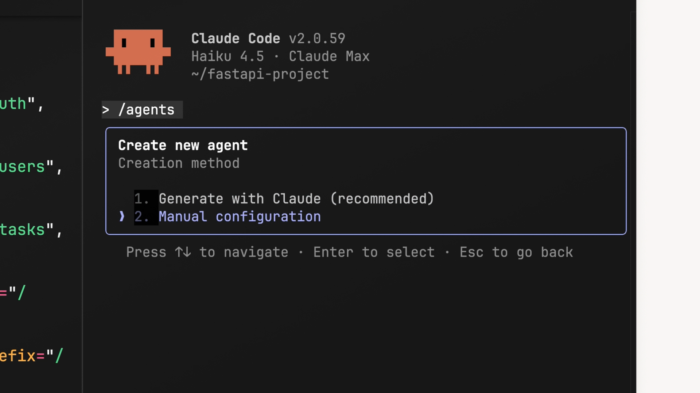
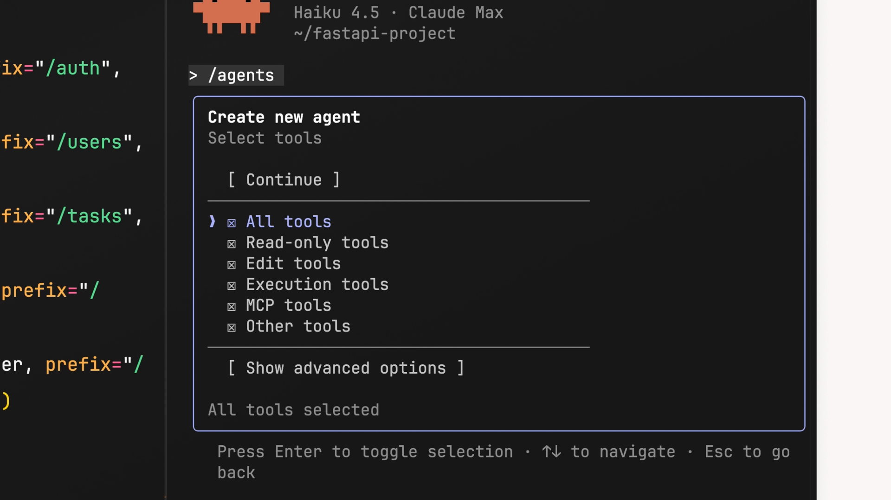
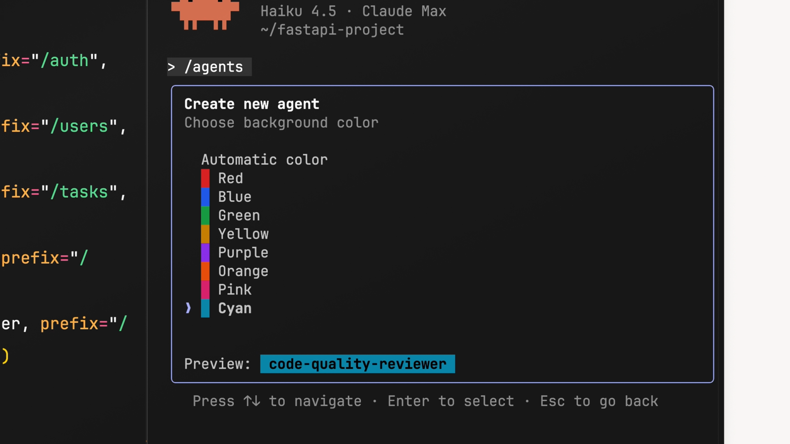
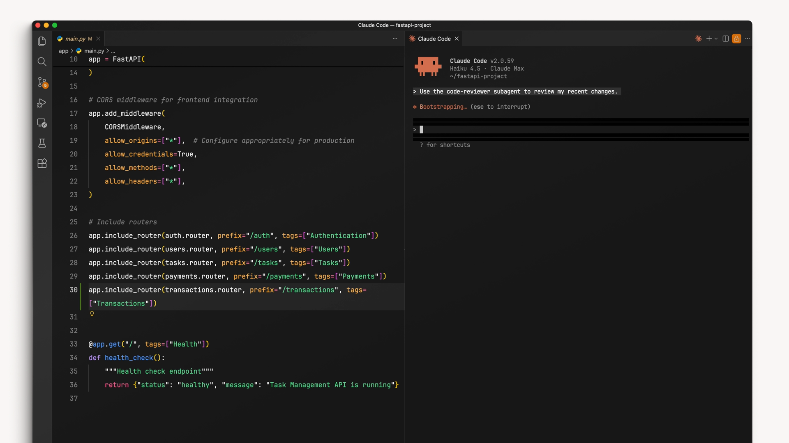

Как создать субагента
Чему научитесь
Видео 3:40 и текст урока
К концу урока вы сможете:
- создать собственного субагента и выбрать для него уровень (проекта или пользователя), инструменты, модель и цвет;
- разобрать файл субагента: поля frontmatter
name,description,tools,model,colorи системный промпт в теле файла; - настроить описание так, чтобы Claude сам передавал задачи субагенту, и проверить субагента в деле.
Видео и текст урока.
В Claude Code есть встроенные субагенты, но можно создавать и своих. Собственные субагенты специализируются на определённых задачах — например, проверяют код, пишут тесты или сверяют документацию. Их описывают в Markdown-файлах с YAML-frontmatter, которые сообщают Claude, когда использовать субагента и как ему себя вести.
Создание субагента
Проще всего создать субагента — попросить Claude написать его за вас. Опишите, какой субагент вам нужен и куда его сохранить, и Claude напишет файл. В видео и на первых трёх скриншотах урока показан мастер /agents, который убрали в Claude Code v2.1.198. Файл субагента и его поля не изменились, поэтому вы по-прежнему выбираете уровень, инструменты, модель и цвет. Укажите их в своей просьбе.
Сначала выберите уровень субагента. Файл в .claude/agents/ — субагент уровня проекта, а файл в ~/.claude/agents/ — уровня пользователя:
- уровень проекта — субагент доступен только в текущем проекте;
- уровень пользователя — субагент общий для всех проектов на вашем компьютере.
Затем можно выбрать способ создания. Конфигурацию можно написать вручную, но рекомендуемый путь — поручить её Claude. Просто опишите, что должен делать субагент, и Claude по вашему описанию составит имя, описание и системный промпт.

/agents: выбор способа создания — сгенерировать с помощью Claude или настроить вручную.Настройка инструментов
При создании можно настроить, к каким инструментам у субагента будет доступ. Инструменты делятся на категории:
- инструменты только для чтения (Read-only tools);
- инструменты правки (Edit tools);
- инструменты выполнения (Execution tools);
- инструменты MCP (MCP tools);
- прочие инструменты (Other tools).

Подумайте, что субагенту действительно нужно. Рецензенту кода, скорее всего, не нужны инструменты правки: он должен читать и анализировать код, а не менять его. Но инструменты выполнения, возможно, стоит оставить, чтобы ему было проще находить ещё не закоммиченные изменения.
Выбор модели и цвета
Настроив инструменты, вы выбираете модель Claude, на которой будет работать субагент. Варианты такие:
- Haiku — лучше всего подходит для быстрых и лёгких задач;
- Sonnet — золотая середина между скоростью и глубиной;
- Opus — лучше всего подходит для сложного анализа;
- Inherit — та же модель, на которой работает основной разговор.
Наконец, вы выбираете цвет. Он отображается в интерфейсе, чтобы можно было сразу понять, какой субагент сейчас работает. Мелочь, но она помогает, когда у вас запущено несколько субагентов.

Файл конфигурации
Когда субагент создан, его файл конфигурации сохраняется в папке выбранного уровня (для субагента уровня проекта обычно это .claude/agents/your-agent-name.md). Вот как выглядит типичная конфигурация субагента:
--- name: code-quality-reviewer description: Use this agent when you need to review recently written or modified code for quality, security, and best practice compliance. tools: Bash, Glob, Grep, Read, WebFetch, WebSearch model: sonnet color: purple --- You are an expert code reviewer specializing in quality assurance, security best practices, and adherence to project standards. Your role is to thoroughly examine recently written or modified code and identify issues that could impact reliability, security, maintainability, or performance.
Разберём каждое поле:
name— уникальный идентификатор субагента. По нему к субагенту и обращаются: просят Claude напрямую или пишут в сообщении@agent-code-quality-reviewer.description— определяет, когда Claude решит использовать субагента. Описание должно занимать одну строку (если нужны переносы, используйте экранированные символы новой строки\n). Сюда можно добавить примеры диалогов, чтобы Claude понимал, когда уместно передавать задачу субагенту.tools— список инструментов, доступных субагенту. Claude заполняет его по вашей просьбе, но вы можете в любой момент поправить список прямо здесь.model— какую модель Claude использовать: псевдоним (sonnet,opus,haikuилиfable), полный ID модели, напримерclaude-sonnet-5, илиinherit.color— цвет в интерфейсе, по которому узнают субагента.
Системный промпт
Тело Markdown-файла (всё, что ниже YAML-frontmatter) — это системный промпт. Здесь вы даёте субагенту инструкции: на чём сосредоточиться, как анализировать и как сообщать о найденном основному агенту.
От того, насколько хорошо написан системный промпт, зависит, принесёт ли субагент пользу или будет бить мимо цели. Укажите конкретно, что субагент должен искать и как оформлять результат.
Чтобы Claude сам обращался к субагенту
Если хотите, чтобы Claude передавал задачи субагенту без вашей явной просьбы, добавьте в поле description слово «proactively». Например:
description: Proactively suggest running this agent after major code changes...
В описание можно добавить и примеры диалогов, чтобы Claude понимал, в каких именно ситуациях нужен этот субагент. Чем конкретнее примеры, тем лучше Claude понимает, когда передавать ему задачу.
Проверка субагента
Создав субагента, испытайте его: внесите какие-нибудь изменения в код и попросите Claude их проверить. Если на момент запуска сессии папки agents ещё не было, сначала перезапустите Claude Code, чтобы он загрузил нового субагента.

Если субагент не используется там, где вы этого ждёте, вернитесь и проверьте описание. Добавьте в него более конкретные примеры и сценарии, в которых нужен субагент: это помогает Claude понять, когда передавать ему работу.
Дальше
Следующий урок — «Эффективные субагенты»: как хорошее описание, заданный формат ответа, отчёт о препятствиях и ограничение инструментов помогают субагенту не блуждать и возвращать результат, которым может воспользоваться основной агент.
Оригинал урока: Creating a subagent.